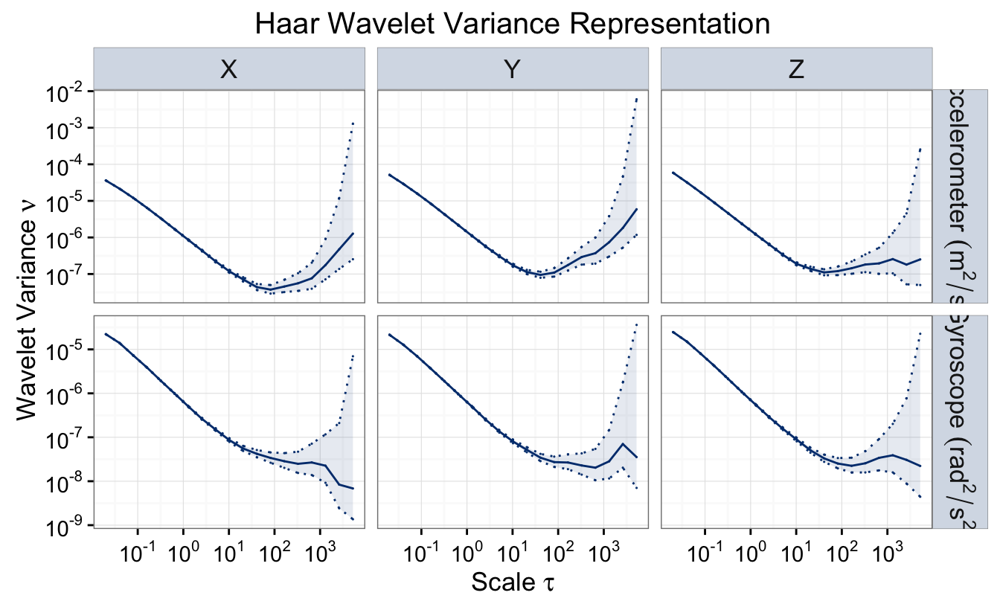
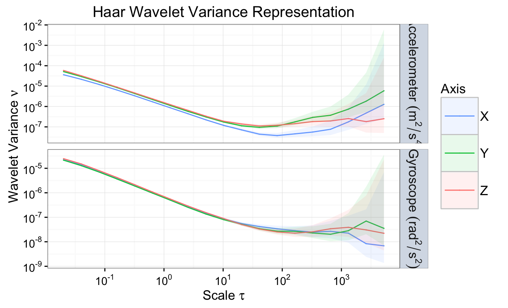
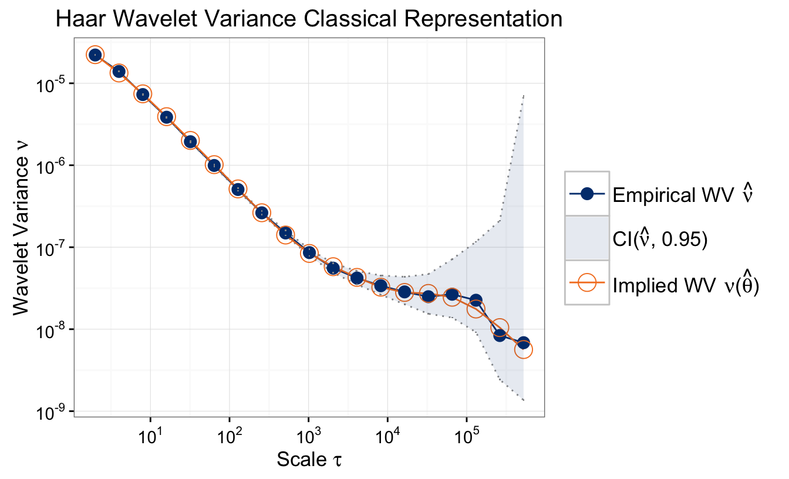

To obtain the data, we must download and install the imudata package.
if(!require("imudata")){
install_imudata()
library("imudata")
}To load the data and display the first rows for each sensor we do:
data(imu6)
head(imu6)## Gyro. X Gyro. Y Gyro. Z Accel. X Accel. Y Accel. Z
## 1 -0.011138 -0.017646 -0.009531 1.083731 0.023897 9.638113
## 2 -0.006765 -0.013657 -0.021974 1.059858 0.042061 9.646901
## 3 -0.002779 -0.010913 -0.024058 1.060207 0.023655 9.665417
## 4 -0.006934 -0.021248 -0.018351 1.059921 0.027322 9.633001
## 5 -0.008164 -0.015213 -0.026140 1.069064 0.032950 9.643449
## 6 -0.004907 -0.026742 -0.011087 1.049330 0.012485 9.658759To use the data within the modeling paradigm, we must first cast it as type imu:
sensor = imu(imu6,
gyros = 1:3,
accels = 4:6,
axis = c('X','Y','Z','X','Y','Z'),
freq = 100)To obtain the variance for an imu object we use:
wv.imu = wvar(sensor)To plot the WV (and confidence intervals) for all gyroscopes and accelerometers, we can use the following function
plot(wv.imu)
To plot the WV for each sensor type together, we can use the following:
plot(wv.imu, split = F)
Let us consider the Gyro on the axis X and, given the estimated WV from the plot, let us estimate a model which is the sum of three AR(1) processes:
# Define model
TS.mod.imu = 3*AR1()
# Compute GMWM estimator
model.imu = gmwm_imu(TS.mod.imu, data = imu6[,1])Note: The gmwm.imu function only is able to handle one sensor at a time.
To see the results of the estimation, we can use the summary function as well as visualize the fit of the implied WV to the estimated WV from Gyro X (as done in the simulation example).
summary(model.imu)## Model Information:
## Estimates
## AR1 9.984890e-01
## SIGMA2 3.679908e-10
## AR1 9.999226e-01
## SIGMA2 1.766829e-11
## AR1 1.255904e-01
## SIGMA2 5.028427e-05
##
## * The initial values of the parameters used in the minimization of the GMWM objective function
## were generated by the program underneath seed: 1337.
##
## Objective Function: 17.2837plot(model.imu)